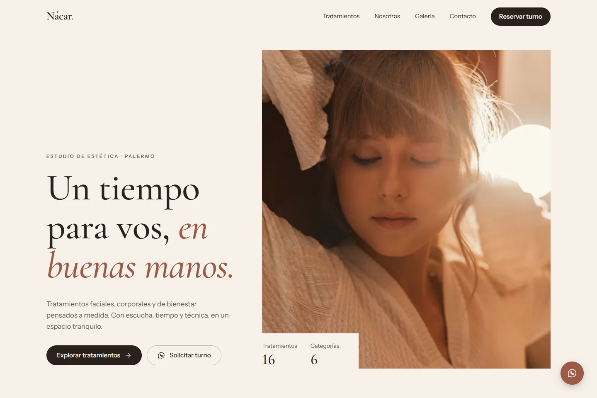

Nácar
Landing page e catálogo de tratamentos com agendamento pelo WhatsApp para um centro de estética.
Demo para centros de estética · Marca fictícia

- Desafio
- Mostrar tratamentos, durações e preços sem responder cada consulta à mão.
- Resultado
- Um catálogo com busca e filtros que leva a cada tratamento e abre o WhatsApp com o agendamento já solicitado.
Sobre o projeto
Site para um centro de estética pensado para ser adaptado a cada cliente: nome, contatos, tratamentos, preços e textos ficam em arquivos de configuração. Usa uma marca fictícia e dados de exemplo.
- Problema
- Muitos centros de estética recebem consultas pelo WhatsApp sem ter onde mostrar seus tratamentos, durações e preços.
- Solução
- Uma landing page que apresenta o centro e um catálogo em que cada tratamento mostra sua duração e um preço de referência, com um botão que abre o WhatsApp com o pedido de agendamento já escrito.
Abordagem técnica
- Catálogo de 16 tratamentos em 6 categorias, com busca, filtro por duração e ordenação; os filtros ficam na URL, então um link compartilha a mesma visualização.
- Uma página por tratamento com duração, preço de referência e variantes, além de links para o WhatsApp com mensagem pronta para agendar ou tirar dúvidas.
- Dados do negócio, tratamentos e textos em arquivos de configuração, para adaptar a um cliente real sem mexer nos componentes.
- Paleta e tipografias definidas como tokens do Tailwind CSS 4; rotas com React Router e fallback de SPA para links diretos.